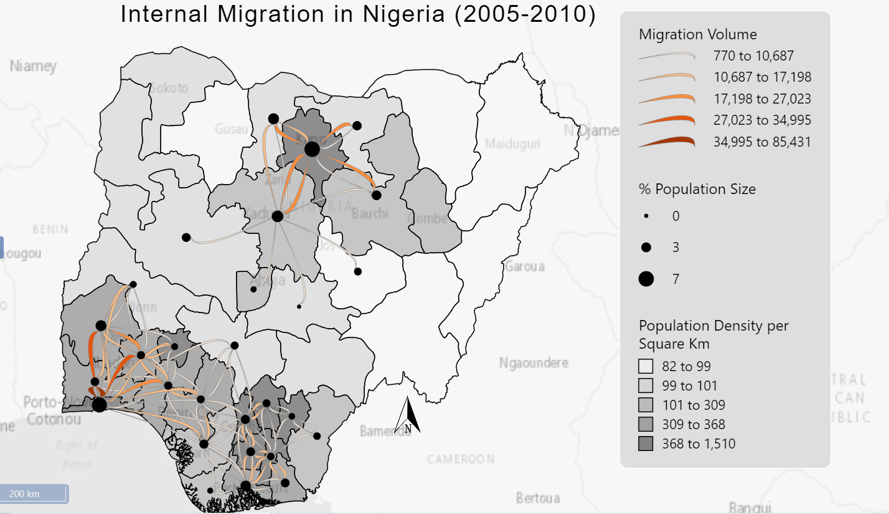

This website contains static geovisualization projects.
First, I chose ALbers Equal area projection to preserve the area bacause I will be presenting Population density which is a function of the area.I also made the Esri light base map slightly opaque to be able to display neigbouring countries and labelling to make location identification easier.
The choice of flow map symbology:
Point symbols: I used a black node symbol to represent the population size and also uses proportianal classification to change the size of the nodes in respect to the value. Imade this symbol black to make the edge of the flowlines more visible.
Flow symbols: I also used a natural break classification for the volume of flows. I used the Tapered flow line in order to reduce ovelapping of the flows. For easier perception I used a natural break classification itsead of proportional symbology to give a sense of difference bewteen
flow lines. I also used an orange symblology with a grey outline to make the flow lines more visible above the choropleth map given the boundaries are black. Due to this choice, I made the stroke color of the state boundaries black with a width of one because the basemap is grey. I made this choice becaue most of the flows are on the south part of the map and the states located here are very small and close to each other.
Background choropleth map:I chose to use a sequential grey color scheme because it is light, showing progression of population densities making the flows more visible and due to the distribtuion of the data, i used natural breaks to be able to identify the outliers.
Places that attract the most flows include Lagos state, Kaduna State and Kano State. Most Migration flows are between Lagos and Osun state, Lagos and Osun, Ogun and Oyo state due various factors such as close proximity, urban nature and most likely similar cultures. Kaduna attracts most people from Kano and Katsina States while Kanos State attracts msot people from Kaduna, Bauchi, Jigawa and Katsina states. Conversely, Ogun state sends the most flows overall due to its closeness to the largest urban center in Nigeria which is lagos. Despite Lagos, being the smallest in terms of Land area, It contributes of the the Largest in terms of Population in relation to other states.
The general direction of flows shows that most migration happens around certain locations which have a distinct characteristics- urban areas. This occurs in the South Western region of the country, and the Northen region of the country.It displays a radial pattern which might indicate economic centers. These patterns are also consistent with the node symbols and the chorpleth map which represents percentage population size and population density respectively. Places with higher migration flows tend to have a higher population size. In terms of population density, most states that have a higher population density tend to have higher population size and migration flows as expected. TEhe densely populated area are towards south-western Nigeria and Northen Nigeria while the sparcely ppulated areas are located in the estern part of the middle belt and the north eastern part of Nigeria and an outlier at the North western part which is in Zamfara state.
The flow map includes a descriptive title that clearly communicates the map's purpose which is a 5-year internal Migration flow in Nigeria (2005-2010). A legend is provided to indicate the variables and symbologies used as well as the classification. Other necessary elements, such as scale indicators and North Arrow, is included to aid in map interpretation.
Due to some states with a small land area having larger flows to adjacent states, having thicker flows makes the map cluttered and hard to interprete. For example, Flows between Lagos state and Ogun state. To minimize visual clutter caused by overlapping flow lines, the flow map shows top 100 flows. I also decieded to use the tapered flow line which doesnt have an arrow head to make visualizations from node to node easier. This ensures that the most relevant flow patterns are emphasized while maintaining map clarity and readability.
Reference
Koylu, C., Tian, G. and Windsor, M. (2021) FlowMapper.org: Web-based and interactive framework for designing origin-destination flow maps.